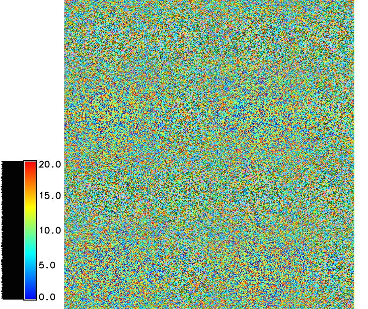
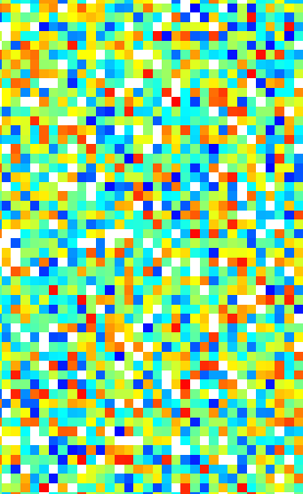
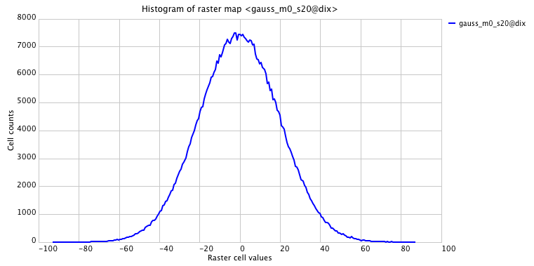
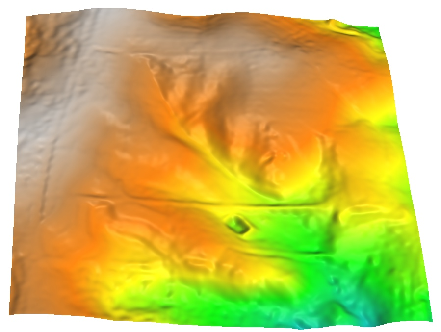

Data simulation
Helena Mitasova, Anna Petrasova, Vaclav Petras
GIS714 Geosimulations NCSU
Learning objectives
- when we need data simulation
- deterministic, random, and fractal surfaces
- simulating point data and patches
- generating scenarios
Steps in development of simulations
- definition of research question
- identification of available data
- design or identification of modeling approach suitable for the research question and available data recall:modeling quantity,scale,configuration space and interactions, governing equations
- sensitivity analysis (most important parameters)
- model parametrization
- calibration and validation
- generating scenarios and running simulations
- uncertainty analysis and error propagation
Motivation for simulating data
- sensitivity analysis: generating model parameters
- uncertainty analysis: simulating errors
- scenario modeling
- testing algorithms
- noise and artifact detection
Types of simulated data
- Geometry
- points, lines, areas, rasters, surfaces
- synthetic data sets - time series
- Approach
- deterministic
- stochastic
- hybrid
Geometry based spatial methods
Deterministic: mathematical functions
$z = 0.2 x + 0.02 y + 50$
Geometry based spatial methods
Deterministic: mathematical functions
$z = \sin (0.4x) + 0.3 \cos(y) + 80$

Smooth, simplified surface
Stochastic methods
- Methods based on random fields
- Uniform random field - linear random number generator


Random numbers from interval [0,20], mean=10: surface and histogram
Stochastic methods
Independent random variable $z$, is often distributed according to the normal distribution: $$ f(z | \mu,\sigma^2) = \frac{1}{\sqrt{2\pi} \sigma} e^{-(z-\mu)^2 / 2\sigma^2} $$where $\mu$ is the mean, $\sigma$ is the standard deviation, $\sigma^2$ is the variance, $e$ is exponential function, and $f(z | \mu,\sigma^2)$ is probability density function of the normal distribution
Monte Carlo methods often require generating values that have normal distribution
Learn more about Normal distribution
Gaussian random field
Random field with $\mu = 120$m and $\sigma = 2$mOne $\sigma$ (68%) of values in the random field are within 2m range of the mean

Uniform and Gaussian random fields
Profile and histograms of random fields:uniform where $z = [0,20]$
Gaussian $z$ where $\mu = 10$ and $\sigma = 6$
Uniform and Gaussian random fields
2D maps: uniform random field $z = [0,20]$ and Gaussian random field with $\mu = 10$ and $\sigma = 6$m 
Simulation of random surface with spatial dependence
Initial Gaussian or uniform random field is smoothed based on a given filter
The filter defines the range and shape of spatial dependence
Spatial dependence
Gaussian random field - no spatial dependence
Spatial dependence
Gaussian random field with spatial dependence $d=10$
Spatial dependence
Gaussian random field spatial dependence $d=30$
Simulating random errors
Random gaussian field: $\mu = 0$m, $\sigma = 0.3$mrandom measurement errors (noise)

Simulation of DEM with noise
Initial elevation surface interpolated by smoothing splines

Simulation of DEM with noise
Gaussian random field with $\mu = 0$m and $\sigma = 0.3$m added to the elevation surface:
Simulation of DEM with noise
Gaussian random field with $\mu = 0$m and $\sigma = 0.3$m and spatial dependence d=10 added to the elevation surface:
Simulation of DEM with noise
DEM interpolated from the lidar point cloud with limited smoothing
Flow over smooth DEM
Spatial pattern of surface flow over smooth DEM
Flow over DEM with noise
Spatial pattern of surface flow over DEM with gaussian random noise

Flow over DEM with noise
Surface flow over noisy DEM with spatial dependency

Flow over DEM with lidar noise
Surface flow over lidar-based DEM with NW-SE direction bias
Lidar point cloud
Spatial pattern of bare ground lidar points
Fractals
Scale invariant features with infinite detail at all scales - complete computation of fractal is impossible
Fractals have non-integer dimension
Deterministic and random fractals
Deterministic fractals
- Self-similar: scaled down and rotated copies of themselves
- Simple algorithms: particular mappig is repeated in recursive scheme
- Fractals by Hausdorff dimension
Random fractals
- Include random component to simulate natural phenomena
- Surfaces with no derivative (infinitely rough)
- Fractal Brownian motion
- Algorithms: midpoint displacement method, Fourier filtering method, random cut method
Random fractals
Surface generated by Fourier filtering method d=2.01
Random fractals
Surface generated by Fourier filtering method d=2.9

DEM with fractal-based noise
Fractal-based noise added to the elevation surface
Flow over DEM with fractal noise
Spatial pattern of surface flow over lidar-based surface

Random points simulation and sampling
- Randomly distributed points in a given space: coordinates $(x_i,y_i)$ are random numbers from a given distribution
- Random points with spatial dependence - e.g. minimum distance appart
- Random sampling of a given field, map, image
- Stratified random sampling: preserves the distribution of values in the sampled data set
- Perturbated random point fields
- Random subsets of existing point data for calibration and validation
Random points
Impact of positional error on viewshed assessment: given viewing points and map showing number of points from which an area is visible
Random points with perturbation
New set of viewing points (red square) after uniform random perturbation ($d=20m$) and the resulting visibility map
Random points with perturbation
Viewing points after perturbation with normal distribution ($\mu = 0m$, $\sigma = 15m$) and the visibility map
Random points with perturbation
Viewing points after perturbation with normal distribution ($\mu = 20m$, $\sigma = 7m$) simulating combined systematic and random error
Random points with perturbation
- Impact of viewing point location and positional error on viewshed area:
run simulation with different configurations of viewing points
- Optimization of location and number of viewing points (e.g. to minimize the number
of locations from which to scan an area using terrestrial lidar) see the method using
simulated annealing applied to our data set
Starek, M.J., et al., 2020, Viewshed simulation and optimization for digital terrain modelling with terrestrial laser scanning, International Journal of Re-mote Sensing, 41:16, 6409-6426
Random patch generators
Generating synthetic land cover / land use mapso
- basic geometric objects (e.g. circular growth) with a stochastic component, or fractal
- patches with spatial dependence
- patches based on perturbation and/or growth of existing patches
- Wegmann, M., et al. (2018). r. pi: A grass gis package for semi‐automatic spatial pattern analysis of remotely sensed land cover data. Methods in Ecology and Evolution, 9(1), 191-199.
- Raster patch index module
Summary
- we discussed when we need data simulation
- we defined deterministic, random, and fractal surfaces
- we have added different type of noise to DEM and shown its impact on flow patterns
- we explained simulation of point data and patches and their application